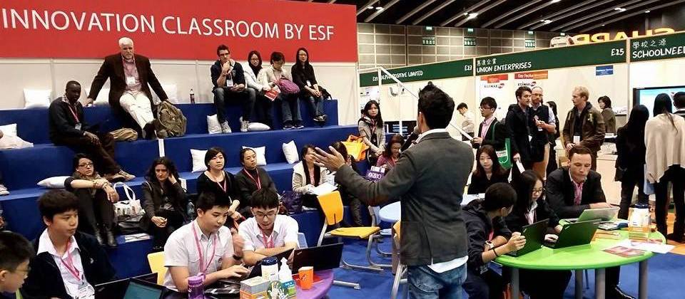
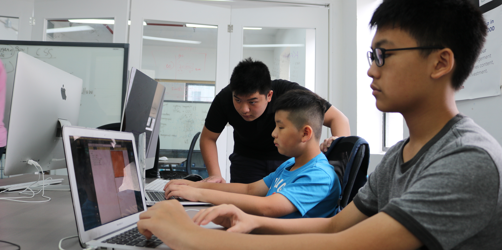
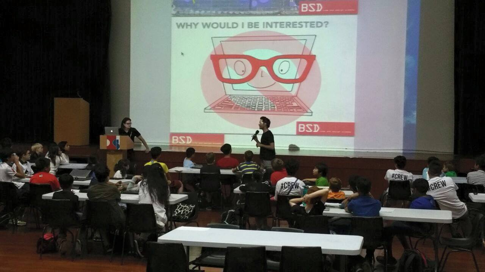

Intro

I am currently a Year 12 student studying the IB Diploma at Sha Tin College. I was previously a part of the school “Tech Stars” initiative which involved a group of students which helped organise and run sessions for both students and teachers.
I have participated in the Learning & Teaching Tech Expo in 2014, and also the ESF Computing Conference in 2015. Since then, I have moved on to working in multiple companies revolving around technology in fields such as Big Data, Digital Marketing and EdTech.
My strong and ever evolving interest in technology has allowed me progress in a vast field and connect with others in different industries to better understand the place we live in.
Work

Since 2013, I have been fortunate enough to have had multiple interning opportunities in different industries revolving around technology.
I have been developing professional grade websites using WordPress and other CMS systems for multiple companies, and have worked with two companies on Big Data how it affects Digital Marketing.
One of the most valuable experiences have been to work with BSD Code & Design Academy. I was a student of theirs over four years ago during a ten week course as part of the “Tech Stars” initiative, and last summer I worked at the Academy as an intern, developing new courses for them and also teaching other students coding.
BSD has had a long relationship with ESF, organising PD workshops and being part of the past ESF Computing Conferences. Their LaunchBox Platform has also become an integral part of the curriculum at both Island School and Sha Tin College, and I have extensive experience with using the platform as a student, as a teacher and as a developer.
Why me?

I believe that my skills with technology in the areas of graphic design, web development and digital marketing are extremely valuable to a team of Digital Leaders.
My experience and connections with different people and companies have also aided me in having a much wider understanding of technology and it's effect.
I have worked collaboratively for many projects in the past, the most recent being part of the organising committee of the OWN Academy Future Careers Fair at RCHK, and that is a non issue for me.
Having worked in multiple professional environments also mean that I am able to work in a collaborative high pressure environment with a good understanding of the expectations of these Digital Leaders.
Contact